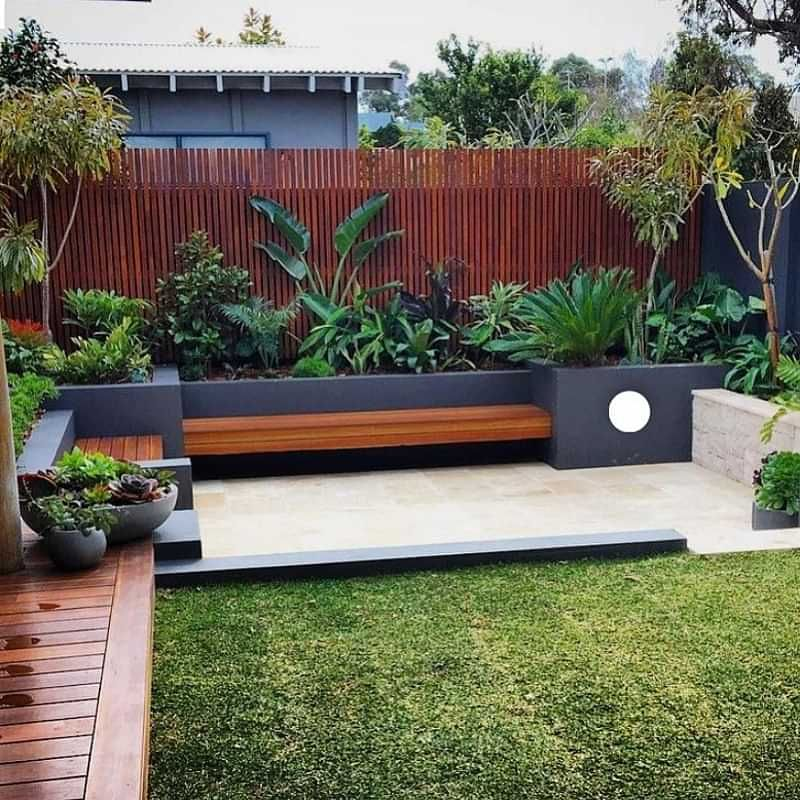

Tendencias de materiales en la construcción de fachadas

Para las fachadas, la arquitectura contemporánea se reinventa y adapta, tomando muchas formas inusuales que las hacen únicas y vibrantes, mientras se trata de que sean cada vez más sostenibles y eficaces.
Diseño y estilo de frentes de casas modernas
La arquitectura, al igual que la decoración, tiene sus tendencias del momento. Pero a diferencia de la elección de los colores utilizados en el hogar, que pueden ser fácilmente sustituidos, las paredes estructurales no se pueden alterar de un año a otro. Y a medida que el consumidor se vuelve más inteligente, las tendencias arquitectónicas se dejan un poco de lado, priorizando el diseño que tiene un sentido de longevidad.
Formas geomértricas
Para el diseño de fachadas de casas tanto pequeñas como grandes, las tendencias giran en torno a la creación de formas voluptuosas geométricas e imponentes, incluso se pueden ver composiciones aerodinámicas que hacen que la arquitectura sea el centro neurálgico de su entorno.
Textura
Se trata de jugar con la textura de los materiales que se utilizan. Se pueden utilizar texturas contrastantes, por ejemplo, utilizar el mismo material con dos niveles diferentes de acabado, uno mate y otro brillante. Esta tendencia ha ido en aumento en el ámbito de los interiores y ahora se extiende hacia el exterior. También se aprovechan algunos materiales que brindan una hermosa textura por sí mismos. Se ven con creciente popularidad los ladrillos, particularmente en las nuevas formas más alargadas que ahora están disponibles. Esta tendencia de textura trae un nivel de artesanía a los exteriores.
Materiales
- Madera: La madera es un clásico en la decoración, y las fachadas no son la excepción. Utilizada durante miles de años, este material sigue siento elegido por su aspecto y precio. Debe ser una madera tratada y es necesario mantenerla periódicamente, para que resista el paso del tiempo y las inclemencias del clima.
- Piedra: La piedra es otra solución clásica y elegante para una decoración moderna. Igual que con la madera, estos materiales se utilizan desde hace miles de años y son reconocidos por sus cualidades de estética y aislamiento. Además, sin duda es uno de los materiales más resistentes que se pueden encontrar en la construcción de casas.
- Ladrillo: Durante los últimos años, los ladrillos han hecho un fuerte retorno, tanto dentro de los hogares como en las fachadas. También se están utilizando para bloquear el viento o la brisa tanto en balcones como terrazas. También se están utilizando ladrillos con estilo industrial, de aspecto deteriorado.
- Cemento alisado: Este es otro de los materiales que se están utilizando mucho. Si se mezcla con toques de metal y madera, puede darle a la casa un aspecto industrial muy interesante. El hormigón evoca algunos de los hogares modernistas de posguerra de los años sesenta y setenta. Realmente cambia el ambiente de una casa, haciendo que se sienta muy especial.
Construcción en seco
Con el tiempo, los trabajos con Durlock se vuelven más comunes. Esto se debe a que la construcción en seco aporta ciertas ventajas y se destaca frente a otros tipos de construcción. Es una excelente opción para quienes necesiten construir su hogar o realizar remodelaciones en él. Los trabajos con Durlock logran adaptarse a todo tipo de diseño de construcción.
Trabajos con Durlock
La manera en la que se realiza la construcción en seco es muy simple. Se arman las estructuras de metal en primera instancia. Se logra con perfiles que son construidos a medida y que se adaptan a todo tipo de construcción. Esto permite la combinación de la construcción tradicional con la construcción en seco.
Luego se aplican placas de Durlock amuradas a los perfiles que ya fueron instalados. Se trata de una opción de construcción mucho más rápida y segura que brinda muchos beneficios que nombraremos más adelante. Los trabajos en Durlock pueden realizarse en todos los sitios: desde una pequeña oficina para separarla en boxes individuales, hasta una gran habitación que necesita ser separada de otra o individualizada. Como se trata de una construcción más que versátil, es posible también bajar techos, con el fin de crear ambientes más amenos y preservar la temperatura, por ejemplo. O, adaptar un gran ambiente, dividirlo y crear distintos más pequeños.
Tips para planificar el diseño del jardin
Organizar el jardín no es tarea fácil, la planificación y el trabajo son necesarios para su mantenimiento. Te comparto algunos puntos clave a tener en cuenta a la hora de diseñar un jardín:
Colocar puntos focales
Cualquier diseño de jardín debe tener puntos focales que determinen su estilo y mejoren el aspecto. Es imprescindible colocar ciertos puntos que focalicen la atención cuando se mire: Un árbol que genere altura, un rincón de arbustos florales, una escultura? Algo que defina el carácter que le queremos dar.
Unificar los elementos
Cada parte del jardín debe estar conectada con el resto. No se puede poner elementos diferentes para diseñarlo, sino que, hay que pensar en conjunto. Por ejemplo, podemos colocar macetas con plantas en una zona pavimentada para suavizar el contraste entre el área pavimentada y el área de plantas.
Amplitud
El tamaño no es importante, lo importante es que parezca amplio. En un jardín grande se pueden colocar más elementos, como por ejemplo juegos de plaza para los chicos. En un jardín pequeño hay que colocar elementos pequeños: no pongas un árbol si podés colocar un arbusto. No se debe saturar los espacios ya que esto genera una sensación de incomodidad y falta de confort.
Simetría
Porque todo diseño de jardín debe guardar cierta simetría para no ser visualmente estridente. Todos utilizamos el jardín como vía de escape, para relajarnos. Elementos como arbustos podados colocados simétricamente o el uso de patrones rectangulares en la zona pavimentada (sofá, alfombra?) conseguirá que nuestro jardín tenga esa simetría que vamos buscando.
Los colores
El color es un elemento fundamental para cualquier diseño y en el paisajismo no podía ser diferente. Los colores crean sensaciones y enriquecen el diseño, crean contrastes y destacan puntos focales, como disimulan otros. Todos los elementos que integran el jardín aportan color y los colores aportan sensaciones por sí mismos: si buscás un jardín que transmita alegría y calidez utilizá colores cálidos: amarillo, naranjas, rojos? Si, por el contrario, querés transmitir calma utiliza el blanco que además aportará luz a los elementos verdes.
Incorporar texturas
La textura es una herramienta que suele pasar más desapercibida que la forma y el color, sin embargo, enriquecerá el movimiento y la armonía del jardín. Aunque utilices una gran variedad de texturas en el jardín el diseño no se verá sobrecargado. Podés jugar con piedras, césped, losetas, arbustos, flores? Todo sirve, todo vale y todo suma.